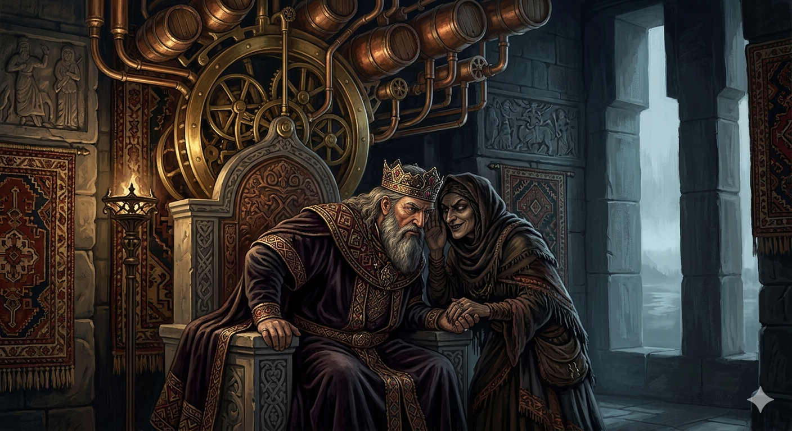

И.А. Дахкильгов. Хьехаме дувцарш - поучительные рассказы-притчи.
И.А. Дахкильгов. Хьехаме дувцарш - поучительные рассказы-притчи. Из ингушского фольклора.

Пирlон хlалакьхиларах
Пир1он харцахьа саг хиннав. Цхьанахьа дуне йисте гезах цхьа сигала хьисапе кхоаленаш яьй цо. Царна т1аг1олла педаш хехкаш, таташ деш, т1ера хий 1очумехкадеш хиннав из. - Со а веций ды къувкъадеш, дог1а делхийташ. Со а веций даьла? – оалаш хиннад цо. Вахаш пхи б1аь шу даьккхад Пир1она. Харцача х1аманна т1ехьа из хинна воллашехьа а, зе-зулам хулаш хиннадац цунна, х1ана аьлча, цох доаллаш дар дика кхо х1ама – боккхий нах ларх1ар, бераш хьесташ хилар, ялата а дуача моллаг1ча а хьурмат дар. Пир1он воаве дагадеад г1амсилга. Пир1онна д1ат1а а даха, аьннад цо: - Пир1он, хьайха нах белаш болга хой хьона? - Сох х1ана бел? – аьнна, хьаттад цо. - Къабенна, мурбенна, х1амана пайданна боацача, каша бахка мара мегаргбоацача боккхийча наьха 1а сий дарах бел, - аьннад. - Долче, хьа духьа из дитар аз, - аьннад Пир1она. - Кхы а бел хьох нах, - д1ахо дийцад г1амсилга, - м1адаш даьха, мераж 1оуха бераш хьест 1а, яхаш, бел хьох нах. - Иштта из долче, хьа духьа из а дут аз, - аьлар Пир1она. - Х1аьта, кхы а нах бел хьох. Наха йоах хьо ц1аьрмата ва, маькха юхкаш д1аехкаш, зирталгаш гулдеш ва, йоах цар, - аьннад г1амсилго. - Д1ахо д1айодача хана из а кхы дергдоацаш дут аз, - жоп деннад Пир1она. Из аьнна воаллашехьа х1алак а хинна, вайна д1аваьлар Пир1он.
РУССКИЙ
Гибель Пиръона
Пиръон был неправедный человек. Где-то на краю света из латуни и меди он сделал своды в виде небес. По ним он с грохотом катал бочки и лил из них воду. - Я ли не могу греметь громом? Я ли не могу лить дождь? Я ли не являюсь богом? – говорил он при этом. Жил Пиръон пятьсот лет. Хотя все это время он и пытался соперничать с самим Всевышним, но Бог не причинял ему никакого вреда, потому что Пиръон соблюдал три хороших обычая: уважал старших, любил детей, свято относился к пище. Некая гамсилг – ведьма – решила погубить Пиръона. Пришла она к нему и сказала: - Знаешь ли ты, Пиръон, что люди смеются над тобою? - А почему они смеются надо мною? – спросил он. - Смеются потому, что ты уважаешь старых людей, которые столь дряхлы и непригодны в этой жизни, что их впору класть в могилы. - Ладно, ради тебя я этого больше делать не буду. - А еще люди смеются, - продолжала гамсилг, - что ты ласкаешь грязных и сопливых детей. - Раз так и этого ради тебя я более не буду делать, - сказал Пиръон. - Также люди смеются над тобой, говоря, что ты жаден настолько, что собираешь хлебные крошки и огрызки, - сказала гамсилг. - Далее и этого я не буду делать, - ответил Пиръон. После этих слов Пиръон сразу же сгинул со света.
ENGLISH
The Downfall of the Pharaoh
The Pharaoh was a wicked man. Somewhere at the edge of the world, he fashioned vaults of brass and copper to resemble the heavens. Along these vaults he rolled barrels with a clatter, pouring water from them. ‘Am I not able to make thunder roar? Am I not able to make rain fall?’ Am I not a god?’ he would say as he did so. Pharaoh lived for five hundred years. Although all this time he tried to rival the Almighty himself, God did him no harm, because Pharaoh observed three good customs: he respected his elders, loved children, and treated food with reverence. A certain hamsilg – a witch – decided to destroy Pharaoh. She came to him and said: ‘Do you know, Pharaoh, that people are laughing at you?’ ‘And why are they laughing at me?’ he asked. ‘They laugh because you respect old people who are so decrepit and useless in this life that they ought to be put in their graves.’ ‘All right, for your sake I won’t do that anymore.’ ‘And people also laugh,’ continued the gamsilg, ‘that you caress dirty, snotty children.’ ‘In that case, for your sake, I shall stop doing that too,’ said Pharaoh. ‘People also laugh at you, saying that you are so greedy that you gather breadcrumbs and scraps,’ said the gamsilg. ‘I shall stop doing that as well,’ replied Pharaoh. After these words, Pharaoh vanished from the face of the earth at once.
НОХЧИЙН
Пир1ун х1аллакьхиларах
Пир1ун харцхьа стаг хилла. Цхьанхьа дуьненна йистехь гезах цхьа стигалан хьесапе кхалонаш йина цо. Царна т1ехула черманаш хоьхкуш, татанаш деш, т1ера хи 1енадеш хилла иза. - Со а вац стигал къовкъайеш, дог1а доьлхуьйтуш. Со а вац дела? – олуш хилла цо. Вехаш пхи б1е шо даьккхина Пир1уно. Харцачу х1уманна т1ехь иза воллушехь а, зен-зулам хуьлуш хилла дац цунна, х1унда аьлча, цунах доллуш дар дика кхоъ х1ума – баккхий нах ларар, бераш хьоьстуш хилар, йалтина а дуучунна молучунна а хьурмат дар. Пир1ун вохаван дагадеан г1оман. Пир1унна т1е а дахна, аьлла цо: - Пир1ун, хьайх нах боьлуш болий хаьий хьуна? - Сох х1унда боьлу? – аьлла, хаьттина цо. - Къанбелла, мурбоьлла, х1уманна пайден боцачу, коше бахка бен мегар боцачу баккхийчу нехан ахь сий дарех боьлу, - аьлла. - Делахь, хьан дуьхьа иза дитира ас, - аьлла Пир1уно. - Кхин а боьлу хьох нах, - кхид1а дийцина г1омо, - модех дохку, мераш охьаоьху бераш хьестадо ахь, бохуш, боьлу хьох нах. - Иштта иза делахь, хьан дуьхьа иза а дуьту ас, - элира Пир1уно. - Х1ета, кхин а нах боьлу хьох. Наха боху хьо сутара ву, баьпкан йуьхкаш д1айохкуш, цуьргаш гулдеш ву, бах цара, - аьлла г1омо. - Кхид1а д1айоьдучу хенахь иза а кхин дийра доцуш дуьту ас, - жоп делла Пир1уно. Иза аьлла воллушехь х1аллак а хилла, вайна д1авелир Пир1ун.
ПОГОВОРКИ
Дуне дуаш вац, ялат дуаш веце. - Тот не живет настояшей жизнью, кто хлеб не ест (не растит). Хина йисте вахе а хина хьурмат де (кхом бе). - Даже живя у реки, воду береги (цени). Хьаошалг1а вахача модзаца мара чай молаш вац, ший ц1аг1а маькха зирталг бац. - В гостях пьет только чай с медом, хотя дома нет и хлебной крошки.